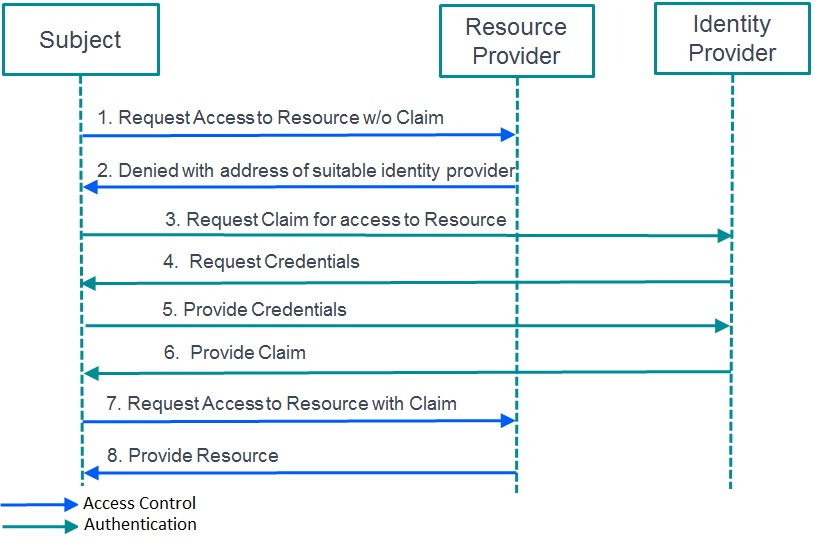

Security Token Services API
Introduction
Scope
The purpose of this document is to describe the StoreFront Security Token Services Application Programming Interface.
Identity Management Systems
Traditional systems have centralized identity management systems and each application is responsible for authenticating the user and establishing their identity. This has led to multiple implementations of authentication and authorization systems and applications with differing levels of support for different protocols.
In federated systems the user authenticates once, to an appropriate authentication service, which gathers information regarding the user. This information often takes the form of assertions or claims regarding the user. The claims are then marshalled to other applications or services that rely on the authentication service by a defined set of messages. These "relying parties" have been configured to trust the assertions/claims issued by the authentication service, or "trusted issuer" and this is commonly enforced by strong cryptographic means such as digital signing and encipherment. The assertions/claims are marshalled as security tokens that are issued by the trusted issuer, held by the application, and presented to other services to gain access to data and services.
The security tokens should be considered to be an opaque blob from which the client should not expect to derive any information. The security tokens are sensitive because they can be used to gain access to resources on the user’s behalf with no additional authentication and are commonly described as “bearer tokens”. Hence it is the client’s responsibility to securely store the token and to not disclose it to inappropriate services.
In the general case, different services will require different security tokens. This is a result of the requirement for the authentication service to encipher the private data so that only the specified relying service can decipher it. This leads to a general interaction pattern where there are a set of authentication endpoints that issue a “primary” security token to the client. The client can then use this primary authentication token to request specific tokens for specific services from a token-granting service. The client can then present this token to the required service to gain access to data and services.
To facilitate changing the token wire representations, a set of abstract interfaces have been defined, which individual "Token Providers" will be required to implement along with base implementations to reduce the amount of new code to be written. Note that although the wire representations are designed to be changeable, the final serialized form is expected to be a Base64 encoded string (see RFC 4648 [http://tools.ietf.org/html/rfc4648]), to enable easy transport within HTTP requests and responses.
The remainder of this document describes the various endpoints associated with the issuing of security tokens and the messages used to interact with security token services.
General Interaction Pattern

The following sequence diagram illustrates how the client and server interact to obtain and use the security tokens, through the exchange of strongly typed messages that are defined in this document.
In general, the sequence is triggered by a client accessing a protected URL and receiving a CitrixAuth challenge, which is further described in the CitrixAuth Authentication Scheme v1.2 document. The client should expect to be challenged at any time when accessing endpoints within the StoreFront or CloudGateway solution.
It is the clients’ responsibility to parse this information and to create the Request Token message, which is described below. This message should then be sent to the authentication service URL to obtain the required security token by means of a HTTP POST. This token is returned as part of the Request Token Response, also described below.
The client may be directed to an URL to perform primary authentication at which time they may receive a HTTP Multiple choices response as a Request Token Choices message, defined below. It is the clients’ responsibility to understand this data and to choose an authentication protocol and associated URL to authenticate to.
Security Token Messages
The conversation between the client and services is a series, or conversation, of strongly typed messages, described below:
- Request Token: This message is sent from the client to the authentication service to request a token for a specific service.
- Refresh Token: This message is sent from the client to the authentication service to request that a token be refreshed, that is, the token validity period is extended.
- Request Token Response: This message is returned by the authentication service in response to a Request Token or a Refresh Token message, and returns a token to the client.
- Destroy Token: This message is sent by the client to the authentication service to tell the service to destroy any server-side state held by the service for a specific token.
- Destroy Token Response: This message is returned by the authentication service in response to a Destroy Token message and details the status of the token that was the subject of the Destroy Token message.
- Request Token Choices: This message is returned by the authentication service in response to a Request Token message. It details the available choices for primary authentication in order to obtain a token.
The messages are now described in more detail.
Request Token
The following information is required by the authentication and token-for-service processes in order to be able to construct the correct security token. The data is sent as XML in the body of the POST, the schema for which can be found at: /Schemas/RequestToken.xsd
| Parameter | Required | Description |
|---|---|---|
| for-service | Yes | A string identifying the service for which the requested token is targeted. |
| for-service-url | Yes | A string representing the URL of the service, from the client’s perspective, for which the token is being requested |
| reqtokentemplate | Yes | The required template for the claims in the token. This may be empty. |
| requested-lifetime | Optional | The requested lifetime for the token. The format is that accepted by the System.TimeSpan.TryParse() method: .d.hh:mm:ss[.ff] where d = days, hh = hours, mm = minutes, ss = seconds, and ff = fractions of seconds. |
| reason | Optional | If a token has been rejected by a service, the reason gives a hint to the service as to how to resolve the issue. |
Notes
- Request Token messages may require a valid Authorization header (see the CitrixAuth Authentication Scheme v1.2 document).
- If the requested lifetime is not specified, then the default lifetime specified by the server administrator will be used.
- If the requested lifetime is longer than the maximum token lifetime, the resulting token may have a shorter lifetime than that requested.
- If the requested lifetime is longer than a lifetime associated with any state held on the server, the resulting token may again have a shorter lifetime than that requested.
Request Token Response
The following information is returned by the authentication and token-for-service processes in response to a request for a token. The data is sent as XML in the body of the POST, the schema for which can be found at: /Schemas/RequestTokenResponse.xsd
| Parameter | Required | Description |
|---|---|---|
| for-service | Yes | A string identifying the service for which the requested token is targeted. |
| Issued | Yes | The issued time of token, expressed in ISO 8601 Utc format:YYYY-MM-DDThh:mm:ss.fZ Where; YYYY is the year, MM the month, DD the day, hh the hour in the day, mm the minutes, ss the seconds, and f the optional decimel fraction of seconds. |
| Expiry | Yes | The expiry time of the token, expressed in ISO 8601 Utc format. |
| Lifetime | Yes | The lifetime of the token in the format d.hh:mm:ss[.f] as above. |
| token-template | Yes | The claim template, which may be empty. |
| token | Yes | The serialized token as a Base64 encoded string (see RFC 4648 [http://tools.ietf.org/html/rfc4648]). |
Notes
The XML is “open” and extensible, allowing additional elements to appear in the XML. This is used by the Common Forms Protocol to provide additional information, such as password expiry warnings, as shown in the example below:
Example: Request Security Token Response with password expiry warning
Request
POST https://www.example.com/Citrix/Authentication/auth/v1/token HTTP/1.1
Content-Type: application/vnd.citrix.requesttoken+xml
Accept: application/vnd.citrix.requesttokenresponse+xml, application/vnd.citrix.requesttokenchoices+xml
Content-Encoding: utf-8
Host: www.example.com
Content-Length: xxx
<?xml version="1.0" encoding="utf-8"?>
<requesttoken xmlns="http://citrix.com/delivery-services/1-0/auth/requesttoken">
<for-service>6b78ab94-a709-4e3a-8b9b-a49ca317c70c</for-service>
<for-service-url>https://www.example.com/Citrix/Store/resources/v2</for-service-url>
<reqtokentemplate />
<requested-lifetime>1.00:00:00</requested-lifetime>
</requesttoken>Response
HTTP/1.1 200 OK
Cache-Control: no-cache; private; no-store; must-revalidate;
max-stale=0; post-check=0; pre-check=0; max-age=0
Pragma: no-cache
Content-Type: application/vnd.citrix.requesttokenresponse+xml
Content-Length: xxx
<?xml version="1.0" encoding="utf-8"?>
<requesttokenresponse xmlns="http://citrix.com/delivery-services/1-0/auth/requesttokenresponse">
<for-service>32f585f3-054d-4ee5-a714-b0e11e312308</for-service>
<issued>2009-05-12T15:27:28.1550000Z</issued>
<expiry>2009-05-12T16:27:28.1550000Z</expiry>
<lifetime>0.20:00:00</lifetime>
<token-template />
<token>H4sIAAAAAAAEAO29B2AcSZYlJi9tynt</token>
<CredentialUpdateInformationList xmlns="http://citrix.com/authentication/response/1">
<CredentialUpdateInformation>
<CredentialDisplayName>ACME</CredentialDisplayName>
<AuthenticationInfoId>1</AuthenticationInfoId>
<ExpiryTime>2010-05-12T15:27:28.155Z</ExpiryTime>
<TimeRemaining>10.05:33:09</TimeRemaining>
<CredentialUpdateService>
/ExplicitForms/ChangePassword
</CredentialUpdateService>
</CredentialUpdateInformation>
</CredentialUpdateInformationList>
</requesttokenresponse>Refresh Token
The following information is required by the token refresh service in order to be able to refresh a security token. The data is sent as XML in the body of the POST, the schema for which can be found at: /Schemas/RefreshToken.xsd
| Parameter | Required | Description |
|---|---|---|
| token | Yes | The serialized token as a Base64 encoded string (see RFC 4648 [http://tools.ietf.org/html/rfc4648]). |
| new-requested-lifetime | Optional | The requested lifetime for the token. The format is that accepted by the System.TimeSpan.TryParse() method:d |
Notes
- The use of this service is deprecated.
- Refresh Token messages require a valid Authorization header (see the CitrixAuth Authentication Scheme v1.2 document).
- The token being refreshed may be different to the token being used for authentication to the service.
Example: Refresh a Security Token
Request
POST https://www.example.com/Citrix/Authentication/auth/v1/token HTTP/1.1
Content-Type: application/vnd.citrix.refreshtoken+xml
Accept: application/vnd.citrix.requesttokenresponse+xml
Authorization: CitrixAuth H4Siaaaaaaabfecde12987
Host: www.example.com
Content-Length: xxx
<?xml version="1.0" encoding="utf-8"?>
<refreshtoken xmlns="http://citrix.com/delivery-services/1-0/auth/refreshtoken">
<token>H4sIAAAAAAAEAO29B2</token>
<new-requested-lifetime>0.01:00:00</new-requested-lifetime>
</refreshtoken>Response
HTTP/1.1 200 OK
Cache-Control: public, no-store, max-age=0
Content-Type: application/vnd.citrix.requesttokenresponse+xml
Content-Length: 4182
<?xml version="1.0" encoding="utf-8"?>
<requesttokenresponse xmlns="http://citrix.com/delivery-services/1-0/auth/requesttokenresponse">
<for-service>32f585f3-054d-4ee5-a714-b0e11e312308</for-service>
<issued>2012-06-12T09:29:11.5210000Z</issued>
<expiry>2012-06-12T10:29:30.2896039Z</expiry>
<lifetime>0.01:00:18.768</lifetime>
<token-template />
<token>H4sIAAAAAAAEAO29B2AcSZYluwHT+bly1cvP/2pl7/XRXP+7uLb+2GALAEhmQ4AAA==</token>
</requesttokenresponse>Destroy Token
The following information is required by the token service in order to be able to destroy any server-side state associated with the specified security token. The data is sent as XML in the body of the POST, the schema for which can be found at: /Schemas/DestroyToken.xsd
| Parameter | Required | Description |
|---|---|---|
| token | Yes | The serialized token as a Base64 encoded string (see RFC 4648 [http://tools.ietf.org/html/rfc4648]). |
Notes
- Destroy Token messages require a valid Authorization header (see the CitrixAuth Authentication Scheme v1.2 document).
- The token being destroyed may be different to the token being used for authentication to the service.
Destroy Token Response
The following information is returned by the token service in response to a Destroy Token message. The response details the status of any server-side state associated with the specified token. The data is sent as XML in the body of the response. The schema for the XML can be found at: /Schemas/DestroyTokenResponse.xsd.
| Parameter | Required | Description |
|---|---|---|
| Status | Yes | The status of the server-side state held for the specified token. |
Example: Destroy a security token
Request
POST https://www.example.com/Citrix/Authentication/auth/v1/token HTTP/1.1
Content-Type: application/vnd.citrix.destroytoken+xml
Accept: application/vnd.citrix.destroytokenresponse+xml
Authorization: CitrixAuth H4sIAAAAAAAEAO29B2AcSZYlJbNOZDgAA
Host: www.example.com
Content-Length: XXX
<?xml version="1.0" encoding="utf-8"?>
<destroytoken xmlns="http://citrix.com/delivery-services/1-0/auth/destroytoken">
<token>H4sIAAAAAAAEAO29B2AcSZYlJi9tynt/SvVK1+B0oQiAYBMk2JBAEOzBiM3mkuwdaUZbNOZDgAA</token>
</destroytoken>>Response
HTTP/1.1 200 OK
Cache-Control: public, no-store, max-age=0
Content-Type: application/vnd.citrix.destroytokenresponse+xml
Content-Length: 183
<?xml version="1.0" encoding="utf-8"?>
<destroytokenresponse xmlns="http://citrix.com/delivery-services/1-0/auth/destroytokenresponse">
<status>destroyed</status>
</destroytokenresponse>Request Token Choices
The following information is returned in response to some Request Token messages and enumerates the different choices of protocols available for authentication. The data is sent as XML in the body of the POST, the schema for which can be found at: /Schemas/RequestTokenChoices.xsd.
| Parameter | Required | Description |
|---|---|---|
| protocol | Yes | A unique identifier for the associated protocol. |
| location | Yes | The URI to POST the Request Token message to, in order to start the authentication process. |
Notes
Request Token Choices are usually returned in response to unauthenticated Request Token messages.
Token Service Endpoints
This section describes the API to be used to access the token services through simple HTTP requests.
Authentication Protocol Choices
- URL: /auth/v1/protocols/
- HTTP Method: POST
- Authentication: None
- Request Content-Type: application/vnd.citrix.requesttoken+xml
- Response Content-Type: application/vnd.citrix.requesttokenchoices+xml
This service returns the authentication protocol choices.
Specific Authentication Protocol
- URL: Protocol-specific and usually obtained from the Protocol Choices
- HTTP Method: POST
- Authentication: The authentication scheme associated with the route
- Request Content-Type: application/vnd.citrix.requesttoken+xml
- Response Content-Type: application/vnd.citrix.requesttokenresponse+xml
Authenticate the user using the authentication protocol specified, to return a Request Token Response.
Notes
Between the POST of the Request Token and the receipt of the the Request Token Response, other HTTP messages may be exchanged as required by the specific protocol. Examples may be: SPNEGO negotiate challenge-responses, HTML forms for forms-based protocols. However, the conversation must always start with the client sending a Request Token Response message, and must always end with the server returning a Request Token Response message.
Request Security Token
- URL: /auth/v1/token
- HTTP Method: POST
- Authentication: CitrixAuth
- Request Content-Type: application/vnd.citrix.requesttoken+xml
- Response Content-Type: application/vnd.citrix.requesttokenresponse+xml
Request a security token for the service specified in the Request Token. The token for the required service is returned in the Request Token Response.
Refresh Security Token
- URL: /auth/v1/token
- HTTP Method: POST
- Authentication: CitrixAuth
- Request Content-Type: application/vnd.citrix.refreshtoken+xml
- Response Content-Type: application/vnd.citrix.requesttokenresponse+xml
Refresh the specified security token by extending its lifetime by the requested amount. A token can be refreshed up to the maximum lifetime period specified by the administrator. This request is protected by the CitrixAuth protocol, and the authorization token need not be the same as the token being refreshed. The refreshed token is returned in the Request Token Response.
Destroy Security Token
- URL: /auth/v1/token
- HTTP Method: POST
- Authentication: CitrixAuth
- Request Content-Type: application/vnd.citrix.destroytoken+xml
- Response Content-Type: application/vnd.citrix.destroytokenresponse+xml
Destroy the server-side data associated with the specified token. This request is protected by the CitrixAuth protocol, and the authorization token need not be the same as the token being destroyed. Note: This doesn’t revoke the security token, but just releases any server-held resources.
Token Validation
- URL: /auth/v1/token/validate/{tokenValidationServiceId}
- HTTP Method: GET
- Authentication: CitrixAuth
- Response Content-Type: application/vnd.citrix.claimsidentity+xml
Return a filtered list of claims extracted from the CitrixAuth authorization token, if the the token is valid. The filtering of the claims is controlled by the administrator of the service.
Notes
{tokenValidationServiceId} denotes a parameter used to identify a particular token validation service. This parameter can be omitted, in which case the value default is used to identify the default token validation service. The default token validation service is utilised by Citrix Merchandising Servers to enable single sign-on. It can also be used to extract information regarding the claims in the primary token, if allowed by the server.
CloudGateway AppControllers also utilize the token validation service. For AppControllers the {tokenValidationServiceId} parameter should be the fully qualified host name associated with the AppController.
Wire-Level Examples
Request to the Service Provider
The following “wire-level” example shows all the HTTP requests and responses when a client attempts to access a protected service (the resources service) and has to obtain security tokens to be granted access.
Request to Service Provider
GET https://www.example.com/resources/v2 HTTP/1.1
Host: www.example.com
Accept: application/vnd.citrix.resources+xml
Response from Service Provider
HTTP/1.1 401 Unauthorized
Cache-Control: public, no-store, max-age=0
WWW-Authenticate: CitrixAuth realm="6b78ab94-a709-4e3a-8b9b-a49ca317c70c",
reqtokentemplate="", reason="notoken",
locations="https://www.example.com/Citrix/Authentication/auth/v1/token",
serviceroot-hint=https://www.example.com/Citrix/Store/resources/v2At this point the client has to take the information provided in the CitrixAuth challenge and construct a Request for Security Token message to be POSTed to the URL specified in the challenge.
Request to Authentication Service
POST https://www.example.com/Citrix/Authentication/auth/v1/token HTTP/1.1
Content-Type: application/vnd.citrix.requesttoken+xml
Accept: application/vnd.citrix.requesttokenresponse+xml, application/vnd.citrix.requesttokenchoices+xml
Content-Encoding: utf-8
Host: www.example.com
Content-Length: xxx
<?xml version="1.0" encoding="utf-8"?>
<requesttoken xmlns="http://citrix.com/delivery-services/1-0/auth/requesttoken">
<for-service>6b78ab94-a709-4e3a-8b9b-a49ca317c70c</for-service>
<for-service-url>https://www.example.com/Citrix/Store/resources/v2</for-service-url>
<reqtokentemplate />
<requested-lifetime>1.06:00:00</requested-lifetime>
</requesttoken>Response from Service Provider
HTTP/1.1 401 Unauthorized
Cache-Control: public, no-store, max-age=0
WWW-Authenticate: CitrixAuth realm="32f585f3-054d-4ee5-a714-b0e11e312308",
reqtokentemplate="", reason="notoken"
locations="https://www.example.com/Citrix/Authentication/auth/v1/protocols",
serviceroot-hint="https://www.example.com/Citrix/Authentication/auth/v1/token"
Hence, the result of this sequence is another challenge, because the client has not presented the security token required to access the token issuing service. The client must therefore parse the challenge again to construct another Request Security Token message and POST it to the indicated URI, as follows:
Request to Authentication Service
POST https://www.example.com/Citrix/Authentication/auth/v1/protocols HTTP/1.1
Content-Type: application/vnd.citrix.requesttoken+xml
Accept: application/vnd.citrix.requesttokenresponse+xml, application/vnd.citrix.requesttokenchoices+xml
Content-Encoding: utf-8
Host: www.example.com
Content-Length: xxx
<?xml version="1.0" encoding="utf-8"?>
<requesttoken xmlns="http://citrix.com/delivery-services/1-0/auth/requesttoken">
<for-service>32f585f3-054d-4ee5-a714-b0e11e312308</for-service>
<for-service-url>https://www.example.com/Citrix/Authentication/auth/v1/token</for-service-url>
<reqtokentemplate />
<requested-lifetime>1.06:00:00</requested-lifetime>
</requesttoken>Response from Service Provider
HTTP/1.1 300 Multiple Choices
Cache-Control: public, no-store, max-age=0
Content-Type: application/vnd.citrix.requesttokenchoices+xml
Content-Length: xxx
<?xml version="1.0" encoding="utf-8"?>
<requesttokenchoices xmlns="http://citrix.com/delivery-services/1-0/auth/requesttokenchoices">
<choices>
<choice>
<protocol>ExplicitForms</protocol>
<location>https://www.example.com/Citrix/Authentication/ExplicitForms/Authenticate</location>
</choice>
</choices>
</requesttokenchoices>In this case the authentication service has responded with a HTTP 300 (Multiple Choices) response, indicating that the security token can be obtained from a choice of URIs. In this case, each choice represents a different authentication protocol. It is the clients’ responsibility to choose an appropriate protocol and endpoint to start the authentication process, by resending the Request Token message to the chosen endpoint, as illustrated below:
Request to Authentication Service
POST https://www.example.com/Citrix/Authentication/ExplicitForms/Authenticate HTTP/1.1
Content-Type: application/vnd.citrix.requesttoken+xml
Accept: application/vnd.citrix.requesttokenresponse+xml, text/xml, application/vnd.citrix.authenticateresponse-1+xml
Host: www.example.com
Content-Length: xxx
<?xml version="1.0" encoding="utf-8"?>
<requesttoken xmlns="http://citrix.com/delivery-services/1-0/auth/requesttoken">
<for-service>32f585f3-054d-4ee5-a714-b0e11e312308</for-service>
<for-service-url>https://www.example.com/Citrix/Authentication/auth/v1/token</for-service-url>
<reqtokentemplate />
<requested-lifetime>1.06:00:00</requested-lifetime>
</requesttoken>The server and client then participate in the authentication protocol sequence, until the server responds with a Request Token Response, as follows:
HTTP/1.1 200 OK
Cache-Control: no-cache; private; no-store; must-revalidate; max-stale=0; post-check=0;
pre-check=0; max-age=0
Content-Type: application/vnd.citrix.requesttokenresponse+xml
Content-Length: xxx
<?xml version="1.0" encoding="utf-8"?>
<requesttokenresponse xmlns="http://citrix.com/delivery-services/1-0/auth/requesttokenresponse">
<for-service>32f585f3-054d-4ee5-a714-b0e11e312308</for-service>
<issued>2012-06-12T09:50:53.8436039Z</issued>
<expiry>2012-06-13T05:50:53.8436039Z</expiry>
<lifetime>0.20:00:00</lifetime>
<token-template />
<token>H4sIAAAAAAAEAO29B2AcSZYlJi9tynt/Sv8Id/T8DXarOsQ4AAA==</token>
<CredentialUpdateInformationList xmlns="http://citrix.com/authentication/response/1">
<CredentialUpdateInformation>
<CredentialDisplayName>example.com</CredentialDisplayName>
<AuthenticationInfoId>Citrix Common Forms 1.0</AuthenticationInfoId>
<CredentialUpdateService />
</CredentialUpdateInformation>
</CredentialUpdateInformationList>
</requesttokenresponse>The client can then use this data to request a token from the token issuing service as follows:
Request to Authentication Service
POST https://www.example.com/Citrix/Authentication/auth/v1/token HTTP/1.1
Content-Type: application/vnd.citrix.requesttoken+xml
Accept: application/vnd.citrix.requesttokenresponse+xml, application/vnd.citrix.requesttokenchoices+xml
Content-Encoding: utf-8
Authorization: CitrixAuth H4sIAAAAAAAEAO29B2AcSZYlJi9tynt/Sv8Id/T8DXarOsQ4AAA==
Host: www.example.com
Content-Length: xxx
<?xml version="1.0" encoding="utf-8"?>
<requesttoken xmlns="http://citrix.com/delivery-services/1-0/auth/requesttoken">
<for-service>6b78ab94-a709-4e3a-8b9b-a49ca317c70c</for-service>
<for-service-url>https://www.example.com/Citrix/Store/resources/v2</for-service-url>
<reqtokentemplate />
<requested-lifetime>1.06:00:00</requested-lifetime>
</requesttoken>Response from Service Provider
HTTP/1.1 200 OK
Cache-Control: public, no-store, max-age=0
Content-Type: application/vnd.citrix.requesttokenresponse+xml
Content-Length: xxx
<?xml version="1.0" encoding="utf-8"?>
<requesttokenresponse xmlns="http://citrix.com/delivery-services/1-0/auth/requesttokenresponse">
<for-service>6b78ab94-a709-4e3a-8b9b-a49ca317c70c</for-service>
<issued>2012-06-12T09:50:53.9106039Z</issued>
<expiry>2012-06-12T10:50:53.9106039Z</expiry>
<lifetime>0.01:00:00</lifetime>
<token-template />
<token>H4sIAAAAAAAEAO29B2AcSZYlJi9tynt/SvVK1+B0oQiAYBMKioDgAA</token>
</requesttokenresponse>The client can then use this data to authorize the original request to the service provider to obtain the requested data, as follows:
Request to Service Provider (Resources)
GET https://www.example.com/Citrix/Store/resources/v2 HTTP/1.1
Accept: application/vnd.citrix.resources+xml
Accept-Encoding: gzip, deflate,gzip, deflate
Authorization: CitrixAuth H4sIAAAAAAAEAO29B2AcSZYlJi9tynt/SvVK1+B0oQiAYBMKioDgAA
Host: www.example.com
Response from Service Provider (Resources)
HTTP/1.1 200 OK
Cache-Control: public, no-store, max-age=0
Content-Type: application/vnd.citrix.resources+xml
Content-Length: xxx
<?xml version="1.0" encoding="utf-8"?>
<resources xmlns="http://citrix.com/delivery-services/2-0/resources"
xmlns:a="http://citrix.com/delivery-services/2-0/subscriptions"
enumeration="full" a:subscriptionsstatus="enabled">
<resource>
…
</resource>
</resources>Token Validation Service
The client of the token validation service, which may be Citrix Merchandising Server or CloudGateway AppController, initially sends the following request for the default token validation service:
Request to Authentication Service
GET https://www.example.com/auth/V1/token/validate HTTP/1.1
Host: www.example.com
Accept: application/vnd.citrix.claimsidentity+xml
Response from Authentication Service
Server: HTTP/1.1 401 Unauthorized
WWW-Authenticate: CitrixAuth realm=" 2deb9210-cb41-4b1f-a27e-93e4980b2e31",
reqtokentemplate="",reason="notoken",
locations="https://www.example.com/auth/v1/token",
serviceroot-hint="https://www.example.com/auth/v1/token"The client again uses the challenge to construct a Request Security Token message and obtains a security token. When a token has been obtained for the Token Validation Service, the client sends:
Request to Authentication Service
GET https://www.example.com/auth/V1/token/validate HTTP/1.1
Host: www.example.com
Authorization: CitrixAuth K5tIBBBBB…cFADyBVAAA==
Accept: application/vnd.citrix.claimsidentity+xml
Response from Authentication Service
HTTP/1.1 200 OK
Content-Type: application/vnd.citrix.claimsidentity+xml
Content-Length: xxx
Cache-Control: no-store
<?xml version ="1.0" encoding="utf-8"?>
<claimsPrincipal xmlns="http://citrix.com/delivery-services/1-0/auth/claimsprincipal">
<identity name='example\user' isAuthenticated='true' authMethod='Citrix Common Forms 1.0' />
<claims>
<claim type='http://schemas.xmlsoap.org/ws/2005/05/identity/claims/sid'
value='S-1-5-21-xxx-1128' valueType='string'
issuer='801e81a8-9d22-4163-bff6-3c9d41156f0e'
original='801e81a8-9d22-4163-bff6-3c9d41156f0e'>
<properties>
<property name='groups'
value='S-1-5-21-xxx-513,S-1-1-0,S-1-5-21-xxx-1011,
S-1-5-21-xxx-1012,S-1-5-21-xxx-1018,
S-1-5-32-555,
S-1-5-32-545,
S-1-5-14,
S-1-5-4,
S-1-5-11,
S-1-5-15,
S-1-2-0,S-1-5-21-xxx-2187,S-1-5-21-xxx-2233' />
</properties>
</claim>
<claim type="uri:citrix.deliveryservices.claim.directoryproperties" value="user"
valueType="string" issuer="801e81a8-9d22-4163-bff6-3c9d41156f0e"
original="801e81a8-9d22-4163-bff6-3c9d41156f0e">
<properties>
<property name="displayName" value="Full username"/>
<property name="mail" value="user@example.com"/>
</properties>
</claim>
</claimsPrincipal>